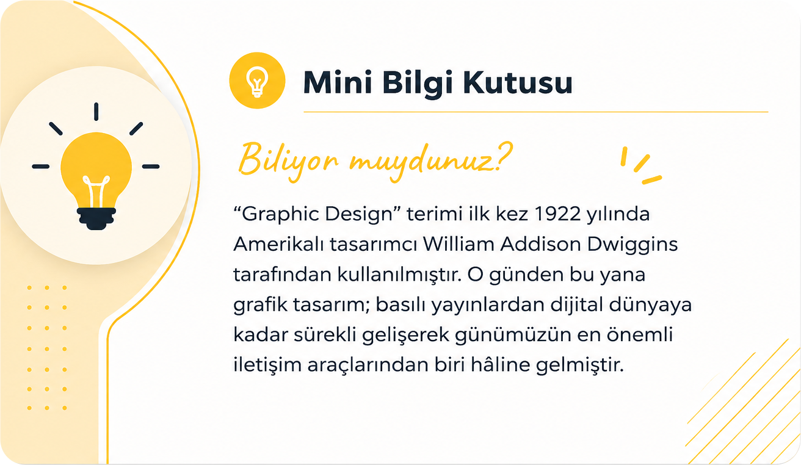

What Is Graphic Design?
We encounter hundreds of designs every day: apps on our phones, product packaging, advertisements, social posts and even road signs. Many are the result of graphic design.
Graphic design is the practice of communicating a message, piece of information or idea clearly and effectively through visual elements. Type, color, shape, photography, illustration and space are brought together with intention.
The goal is not simply to make something attractive. Good design captures attention, makes information easier to understand and helps create the desired response. In short, graphic design is visual communication.
Why does graphic design matter?
- It attracts attention.
- It makes messages easier to understand.
- It helps build trust in a brand.
- It presents information in an organized way.
- It makes ideas more memorable.
Graphic design appears in brand identities, apps, social media, books and magazines, packaging, websites, billboards and business cards. Designers study the audience and shape a visual language that communicates the intended message.
Is graphic design art?
Graphic design can draw inspiration from art, but its central purpose is to solve a problem and communicate. It combines creativity and aesthetics with a specific goal.

Frequently asked questions
No. Drawing can help, but it is not required to learn the principles of graphic design.
Branding, advertising, social media, web and app design, packaging, publishing and many other fields.